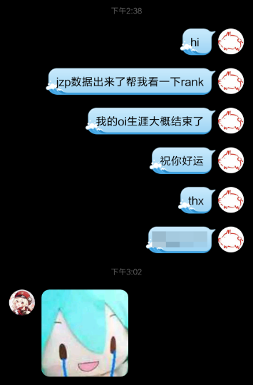

sun123zxy’s blog
Overview
About
All Posts
Categories
All
(9)
algorithm
(3)
LaTeX
(1)
memories
(7)
Minecraft
(2)
music
(2)
Python
(1)
site-related
(3)
tour
(4)
web
(2)
Casual
Rambling words.
Order By
Default
Title
Date - Oldest
Date - Newest
写在 Ancient Temple 发布之后
memories
Minecraft
music
照例写写后记。
2024/06/14
zh
CCPC 2023 湘潭邀请赛游记
tour
algorithm
memories
04:36，长沙返程的硬卧列车上。
2023/05/30
国家博物馆兼东单良乡骑行一日游
tour
或许是第一篇正常的游记（
2023/03/06
聊聊红石音乐
memories
Minecraft
music
Python
封存的幻想。
2023/02/17
Jekyll 2 Quarto: Academic Writing’s not All About PDF
博客搭建随想 Part II
site-related
web
LaTeX
memories
PDF，我所欲也；HTML，亦我所欲也。二者不可得兼……
2022/12/26
Cnblogs 2 Jekyll：从寄人篱下到手撸全站
博客搭建随想 Part I
site-related
web
memories
某不务正业 OIer 摸鱼日记。
2021/08/17

终末之章——CSP-S2020&NOIP2020退役记
algorithm
tour
memories
走了，回来了。不管如何，这条路似乎已经延伸得很漫长了。从兴趣，变成兼修，变成接近专修，又变回兴趣，这中间的路太长，以至于虽然百味杂陈，却说不出什么感想。
2020/12/06
About
site-related
说是 About，但莫名其妙写成了近况杂谈（笑）
2020/10/24
zh
CSP-S2019游记
algorithm
tour
memories
你们这个CSP啊，Exciting！
2019/11/17
No matching items